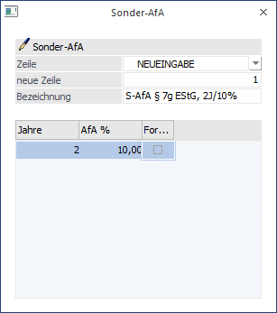
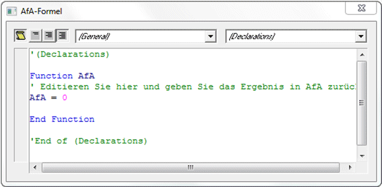
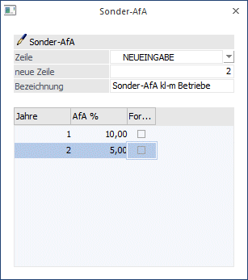

Sonderabschreibungen sind aufgrund unterschiedlicher gesetzlicher Vorschriften zulässig und dürfen zusätzlich zur linearen oder degressiven AfA vorgenommen werden. Die insgesamt zulässigen Sonderabschreibungen dürfen innerhalb des Begünstigungszeitraums beliebig verteilt werden und brauchen nicht in voller Höhe in Anspruch genommen werden.
Diese Einstellung finden Sie im Menüpunkt:
1 Stammdaten
1 Sonder-AfA

Achtung
Gilt nur für Deutschland.
Als Sonder-AfA können zusätzlich zur gewöhnlichen AfA 20 Prozent als AfA geltend gemacht werden, die auf die ersten 5 Jahre der Abschreibungsdauer verteilt werden können.
Ø Zeile / neue Zeile
Vergabe einer 2stelligen Zeilennummer. Es können bis zu 99 Nummern vergeben werden.
Ø Bezeichnung
Vergabe einer Bezeichnung der Zeile
Ø Jahre / AfA %
Eingabe der Jahre und des AfA-Prozentsatzes, der in diesen Jahren geltend gemacht wird.
Ø Formel
Durch Aktivierung der Formel steht ihnen eine Eingabemöglichkeit für VB-Script Formeln zur Verfügung. Damit können Sie die unterschiedlichsten Abschreibungsanforderungen abdecken. Wird das Häkchen in der Spalte Formel deaktiviert, wird die gesamte eingegebene Formel automatisch gelöscht.

Buttons
Ø OK
Mit OK können neue Zeilen gespeichert werden.
Ø Ende
Mit Ende wird das Fenster geschlossen.
Ø Editieren
Mit dem Editieren-Button können bereits hinterlegte VB-Script-Formeln editiert werden. Klicken Sie dazu in ein Feld neben der Spalte Formel.
Beispiele
Es können in den ersten 5 Jahren bis max. 20% zusätzlich geltend gemacht werden.
Nr. 1:
Die Eingabe 2 / 5 würde bedeuten, dass in den ersten beiden Jahren jeweils 5 % Sonder-AfA geltend gemacht werden.
Nr. 2:
Die Eingabe 1 / 10 in der ersten Zeile würde bedeuten, dass im ersten Jahr 10 % abgeschrieben werden.
Die Eingabe 2 / 5 in der zweiten Zeile würde bedeuten, dass im 2. und 3. Jahr jeweils 5 % abgeschrieben werden.

Hinweis
Um eine gleichbleibende Normal-AfA während des Begünstigungszeitraumes zu erhalten, müssen alle 5 Jahre in der Staffel aufgenommen werden. Die Jahre, für die keine Sonder-AfA während des Begünstigungszeitraumes genutzt wird, werden mit 0 % hinterlegt.
Nach Ablauf des Begünstigungszeitraumes errechnet sich die Abschreibung neu nach dem Restwert und der Restnutzungsdauer.